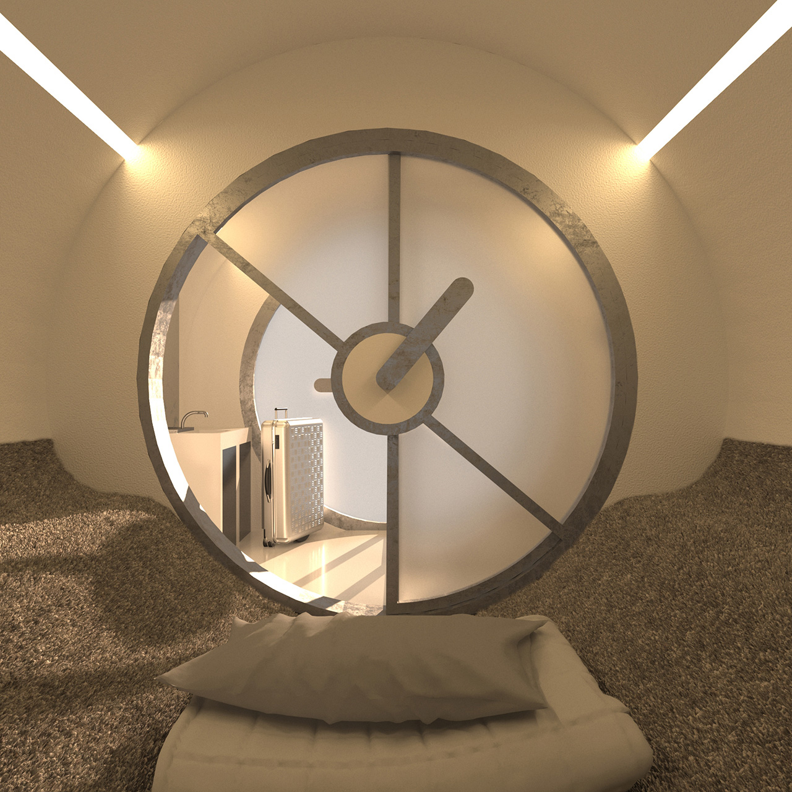
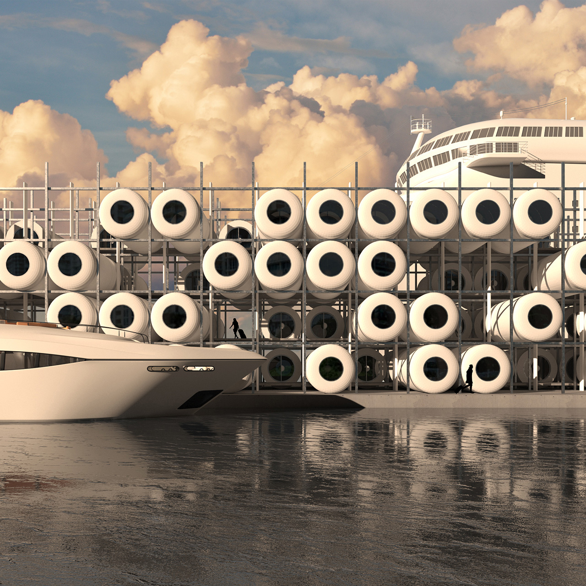

PIPE CELL
By the end of the 2020s, polystyrene foam cells have become the most adopted accommodation facility for entry quarantine sessions in international travels (also domestic travels in certain cases). As an instant solution to randomized COVID emergencies under exponential virus mutations, the pipe-moduled cells can be efficiently produced by uniaxial printers that are affordable to most airports and harbors. Although their instant production is widely criticized for environmental concerns, with the promoted ideals of recycling being overwhelmed by reports of staggering dump fields, the endlessly refilled cell racks have undoubtedly told the sustained demands of international travel over the pandemic decade.
 The Intl.Standard 2-Part Pipe Module
The Intl.Standard 2-Part Pipe Module
 Affordable Uniaxial Printing for Instant Assembly
Affordable Uniaxial Printing for Instant Assembly
 Interior Layout
Interior Layout
 Unfurnished Cell
 Cell Rack at Harbor
The Infinite 14 Days